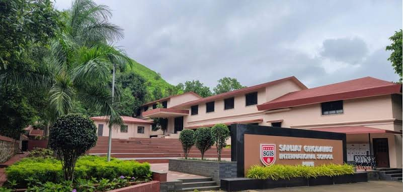

Sanjay Ghodawat International School
Pune (Mulshi) and Kolhapur campuses
Sanjay Ghodawat International School is a co-educational international boarding school established in 2010 under the Sou. Sushila Danchand Ghodawat Charitable Trust. It runs campuses at Mulshi in Pune and at Atigre near Kolhapur, and the two operate as one institution across locations.
The school offers internationally recognised curricula, including the Cambridge programme and the International Baccalaureate Diploma Programme, alongside CBSE at the Kolhapur campus. SGIS Pune is a boarding school for students aged 6 to 18, set on a residential campus surrounded by greenery in Mulshi.

Beyond the classroom, SGIS runs an active programme in student leadership and global awareness, including a Model United Nations club where students train in public speaking, research and resolution writing, and take part in national and international conferences. Alongside this sit a wide range of co-curricular activities and sports, from swimming and rock-climbing to football, chess and athletics.
The school describes its approach as blending academic rigour with character education and real-world skills, rooted in integrity, empathy and resilience.
Information about the school is drawn from its official websites, and photographs are used with permission. For admissions or school enquiries, please contact SGIS directly rather than the Élan team.